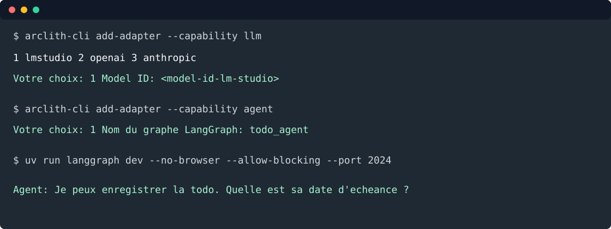

6. Ajouter un agent¶
Objectif: créer un agent LangGraph qui pose les questions manquantes, puis appelle
CreateTodoUseCase avec les mêmes données que l'API et le MCP.

L'agent a deux responsabilités:
- transformer la conversation en
TodoDraft; - demander les champs manquants avant d'enregistrer.
Il ne connaît pas la persistance. Il appelle le use case applicatif.
Installer les dépendances agent¶
uv add "arclith[langgraph]"
Créer le planner¶
Depuis la racine du projet:
arclith-cli add-planner
Répondre:
Planner (ex : IngredientIntent, todo_planner)
Nom du planner: TodoConversation
Remplacer src/todo_list_service/application/planners/todo_conversation.py par:
from __future__ import annotations
from datetime import date, datetime
from arclith.domain.ports.outbound.llm import LLMPort
from pydantic import BaseModel, Field
from todo_list_service.domain.models.todo import TodoStatus
class TodoDraft(BaseModel):
title: str | None = Field(default=None)
description: str | None = Field(default=None)
due_date: date | None = Field(default=None)
status: TodoStatus | None = Field(default=None)
completed_at: datetime | None = Field(default=None)
class TodoConversationPlanner:
def __init__(self, llm: LLMPort) -> None:
self._llm = llm
async def extract(self, prompt: str, current: TodoDraft) -> TodoDraft:
return await self._llm.complete_structured(
prompt,
output_type=TodoDraft,
instructions=(
"Tu extrais les champs d'une todo à partir d'une conversation en français. "
"Retourne uniquement les champs explicitement présents ou clairement déduits. "
"Ne fabrique pas de titre, de description ou de date. "
f"Draft actuel: {current.model_dump_json(exclude_none=True)}"
),
)
Configurer LM Studio¶
Démarrer LM Studio Local Server sur http://127.0.0.1:1234/v1, puis vérifier les modèles:
curl -fsS http://127.0.0.1:1234/v1/models
Lancer le wizard LLM:
arclith-cli add-adapter --capability llm
Répondre:
① Type d'adapter
1 lmstudio
2 openai
3 anthropic
Votre choix (numéro ou nom): 1
③ Paramètres lmstudio
Model ID LM Studio: <model-id-lm-studio>
Endpoint OpenAI-compatible LM Studio (http://127.0.0.1:1234/v1):
API key LM Studio (lm-studio):
Confirmer la génération ? [y/n] (y): y
La CLI crée:
config/adapters/outbound/lm.yaml
Configurer LangSmith¶
LangSmith est optionnel pour exécuter localement, mais utile pour inspecter les runs.
arclith-cli add-adapter --capability observability
Répondre:
① Type d'adapter
1 langsmith
2 opentelemetry
Votre choix (numéro ou nom): 1
Activer LANGSMITH_TRACING [y/n] (y): y
Projet LangSmith (todo-list-service): todo-list-service-dev
Endpoint LangSmith (https://api.smith.langchain.com):
LANGSMITH_API_KEY:
Activer langsmith maintenant ? [y/n] (y): y
Confirmer la génération ? [y/n] (y): y
La clé reste dans .env, jamais dans Git.
Générer l'entrypoint LangGraph¶
arclith-cli add-adapter --capability agent
Répondre:
① Type d'adapter
1 langgraph
Votre choix (numéro ou nom): 1
Nom du graphe LangGraph (agent): todo_agent
Confirmer la génération ? [y/n] (y): y
La CLI crée:
langgraph.json
config/adapters/inbound/langgraph.yaml
src/todo_list_service/adapters/inbound/langgraph/agent.py
Code agent¶
Remplacer src/todo_list_service/adapters/inbound/langgraph/agent.py par:
from __future__ import annotations
from functools import lru_cache
from typing import Any, TypedDict
from arclith import Arclith
from arclith.adapters.outbound.pydantic_ai.llm import PydanticAILLMAdapter
from langgraph.graph import END, START
from todo_list_service.application.planners.todo_conversation import TodoConversationPlanner, TodoDraft
from todo_list_service.application.use_cases.create_todo import CreateTodoCommand, CreateTodoUseCase
from todo_list_service.domain.models.todo import TodoStatus
from todo_list_service.infrastructure.containers.todo_container import build_create_todo_use_case
class AgentState(TypedDict, total=False):
messages: list[dict[str, Any]]
draft: dict[str, Any]
answer: str
arclith = Arclith("config")
@lru_cache(maxsize=1)
def _create_todo_use_case() -> CreateTodoUseCase:
return build_create_todo_use_case(arclith)
@lru_cache(maxsize=1)
def _planner() -> TodoConversationPlanner:
lm_settings = arclith.config.adapters.lm
if lm_settings is None:
raise RuntimeError("config/adapters/outbound/lm.yaml est requis pour l'agent.")
return TodoConversationPlanner(PydanticAILLMAdapter(lm_settings))
def _last_user_message(state: AgentState) -> str:
for message in reversed(state.get("messages", [])):
if message.get("role") in {"user", "human"}:
return str(message.get("content", ""))
return ""
def _draft_from_state(state: AgentState) -> TodoDraft:
return TodoDraft.model_validate(state.get("draft", {}))
def _missing_fields(draft: TodoDraft) -> list[str]:
missing: list[str] = []
if not draft.title:
missing.append("title")
if not draft.description:
missing.append("description")
if draft.due_date is None:
missing.append("due_date")
if draft.status is None:
missing.append("status")
if draft.status == TodoStatus.DONE and draft.completed_at is None:
missing.append("completed_at")
return missing
def _question_for(field: str) -> str:
questions = {
"title": "Quel est le titre de la todo ?",
"description": "Quelle description veux-tu enregistrer ?",
"due_date": "Quelle est la date d'échéance ?",
"status": "Quel est le statut : todo, wip ou done ?",
"completed_at": "Quelle est la date de réalisation ?",
}
return questions[field]
async def run_agent(state: AgentState) -> AgentState:
prompt = _last_user_message(state)
current = _draft_from_state(state)
if prompt:
extracted = await _planner().extract(prompt, current)
current = current.model_copy(update=extracted.model_dump(exclude_none=True))
missing = _missing_fields(current)
if missing:
answer = _question_for(missing[0])
messages = [*state.get("messages", []), {"role": "assistant", "content": answer}]
return {**state, "draft": current.model_dump(mode="json", exclude_none=True), "answer": answer, "messages": messages}
todo = await _create_todo_use_case().execute(
CreateTodoCommand(
title=current.title or "",
description=current.description or "",
due_date=current.due_date,
status=current.status or TodoStatus.TODO,
completed_at=current.completed_at,
)
)
answer = f"Todo créée: {todo.title} ({todo.uuid})."
messages = [*state.get("messages", []), {"role": "assistant", "content": answer}]
return {**state, "draft": {}, "answer": answer, "messages": messages}
def register_agent(builder: Any, app: Arclith) -> None:
builder.add_node("agent", run_agent)
builder.add_edge(START, "agent")
builder.add_edge("agent", END)
agent = arclith.langgraph(AgentState, register_agent, name="todo_agent")
Tester l'agent¶
Lancer LangGraph Studio:
uv run langgraph dev --no-browser --allow-blocking --port 2024
Envoyer un état incomplet:
{
"messages": [
{
"role": "user",
"content": "Ajoute une todo pour écrire la doc"
}
]
}
L'agent doit demander le premier champ manquant, par exemple la description ou la date d'échéance.
Envoyer ensuite un état complet:
{
"messages": [
{
"role": "user",
"content": "Crée une todo titre Écrire la doc, description couvrir API MCP agent, échéance 2026-09-01, statut todo"
}
]
}
Résultat attendu:
Todo créée: Écrire la doc (<uuid>).
Passer à MongoDB ensuite¶
Avec repository: memory, l'API/MCP et LangGraph ne partagent les données que s'ils tournent dans le
même processus. Pour partager entre processus, ajouter MongoDB.
Installer l'extra:
uv add "arclith[mongodb]"
Lancer le wizard:
arclith-cli add-adapter --capability repository
Répondre:
① Type d'adapter
1 memory
2 mongodb
3 duckdb
4 mariadb
Votre choix (numéro ou nom): 2
③ Paramètres mongodb
db_name (todo-list-service): todo_list_service
multitenant [y/n] (n): n
Activer mongodb maintenant ? [y/n] (y): y
Confirmer la génération ? [y/n] (y): y
La CLI crée les fichiers repository MongoDB et active:
repository: mongodb
Configurer l'URI MongoDB via le resolver de secrets local, puis relancer API, MCP et LangGraph.
Voie rapide¶
uv add "arclith[langgraph]"
arclith-cli add-planner TodoConversation
arclith-cli add-adapter --capability llm --adapter lmstudio --param model_name="<model-id-lm-studio>" --yes
arclith-cli add-adapter --capability observability --adapter langsmith
arclith-cli add-adapter --capability agent --adapter langgraph --param graph_name=todo_agent --yes
# Ensuite, pour partager les données entre processus:
uv add "arclith[mongodb]"
arclith-cli add-adapter --capability repository --adapter mongodb --entity Todo --db-name todo_list_service --yes